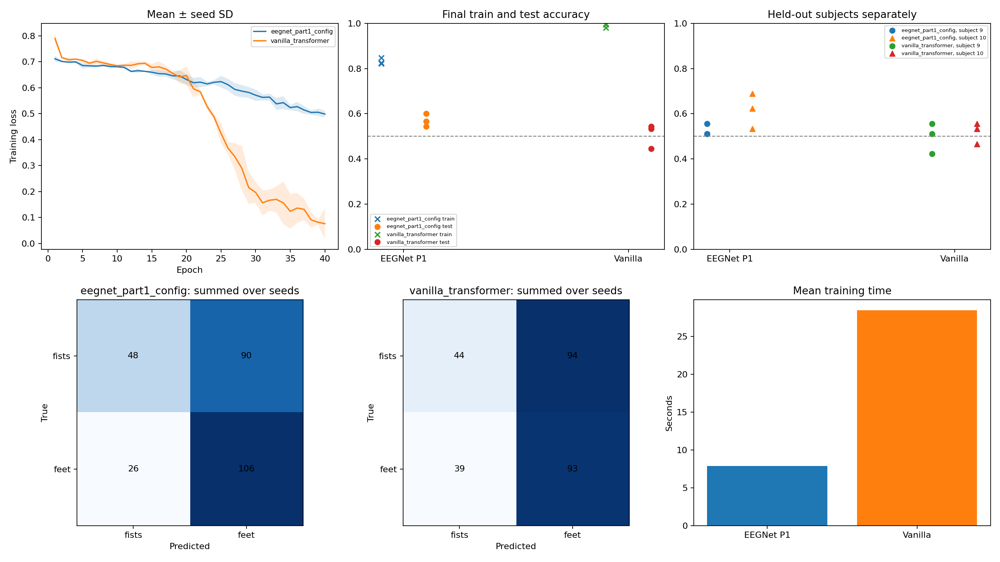

# Part 2 GPU baseline audit Hardware: Tesla T4. Training: fp16; final evaluation: FP32. Budget: 40 epochs; seeds [0, 1, 2]; effective batch 64; transformer microbatch 16. EEGNet uses full effective batches to preserve BN statistics. Both models use AdamW, lr 0.001, weight decay 0.001. ## Experiment and data integrity Exactly two models: EEGNet with Part 1's F1=8, D=2, F2=16, temporal kernel 80 and dropout 0.5; unchanged VanillaEEGTransformer with d=64, four heads, three layers and dropout 0.3. Real experiment: EEGBCI subjects 1–8 for training (360 trials), subjects 9–10 for test (90 trials). Imagined both fists versus both feet; runs 6, 10, 14; 64 channels, 160 Hz, 481 samples per trial. 7–30 Hz filtering and training-only channel scaling. Raw data checksums are checked before training. The Part 1 architecture is freshly trained on Part 2 preprocessing. This is not a reproduction of the Part 1 score or a reuse of its checkpoint. This audit does not train the custom model. The final epoch is chosen before training; test scores never select checkpoints. There is no validation-based hyperparameter search. Data preprocessing fits training subjects only. ## Measured results | Model | Params | Test best | Test worst | Test mean ± seed SD | Mean train accuracy | Mean training | Mean test inference | | --- | ---: | ---: | ---: | ---: | ---: | ---: | ---: | | eegnet_part1_config | 2,738 | 60.00% | 54.44% | 57.04% ± 2.28 pp | 83.15% | 7.86 s | 0.0081 s | | vanilla_transformer | 135,746 | 54.44% | 44.44% | 50.74% ± 4.48 pp | 99.07% | 28.46 s | 0.0431 s | Inference time covers the complete test set, including probability transfer to CPU. It is measured once after training, not a repeated latency benchmark. GPU operations are synchronized for timing. | Model | Seed | Train | Test | Balanced test | Subject 9 | Subject 10 | Peak allocated GPU MiB | Skipped AMP steps | | --- | ---: | ---: | ---: | ---: | ---: | ---: | ---: | ---: | | eegnet_part1_config | 0 | 84.72% | 60.00% | 60.38% | 51.11% | 68.89% | 213.0 | 0 | | eegnet_part1_config | 1 | 82.50% | 54.44% | 54.79% | 55.56% | 53.33% | 213.0 | 0 | | eegnet_part1_config | 2 | 82.22% | 56.67% | 57.46% | 51.11% | 62.22% | 213.0 | 0 | | vanilla_transformer | 0 | 99.44% | 54.44% | 54.99% | 55.56% | 53.33% | 649.5 | 0 | | vanilla_transformer | 1 | 98.06% | 44.44% | 44.76% | 42.22% | 46.67% | 649.5 | 0 | | vanilla_transformer | 2 | 99.72% | 53.33% | 53.75% | 51.11% | 55.56% | 649.5 | 0 | Peak allocated memory includes resident data, model, optimizer and temporary tensors; it excludes CUDA allocations outside PyTorch's allocator. AMP may skip an update when gradients overflow; all skipped updates are counted. ## What the models compute EEGNet: shared temporal filtering → frequency-specific full-scalp spatial filtering → separable temporal filtering → pooled features → linear classifier. Shapes excluding batch: 64×481 → 8×64×482 → 16×1×120 → 16×1×15 → 2 logits. It has 2,738 trainable parameters. Vanilla: each 64-electrode instantaneous sample becomes one 64-dimensional token. Add CLS and learned temporal positions, then three standard encoder layers and a CLS classifier. It has 135,746 parameters, 482 tokens including CLS and 232,324 attention entries per head per layer. Head dimension is 16, so scaled attention divides QK dot products by 4. It attends across time; electrode identity enters through fixed slots in the projection, without explicit electrode geometry. The transformer is about 50 times larger than this EEGNet. Differences cannot be attributed solely to attention. Strict mode selects deterministic math SDPA and does not assume T4 supports FlashAttention. AMP and microbatching are execution choices, not a new inductive bias. Transformer microbatching preserves effective batch size and sample-weighted gradients, including short final batches. EEGNet trains with full effective batches so BN statistics are preserved. Dropout draws and floating-point reductions differ between GPU and CPU; this is not claimed bitwise equivalent to the CPU run. ## Reading the outcome Compare the train/test gap, seed spread, predicted-class counts and subject-specific results together. A large training/test gap is compatible with overfitting; low training accuracy also permits optimization difficulty. This report does not declare a physiological mechanism from accuracy alone. The real test majority-class reference is 46/90 = 51.11%; constant predictions have balanced accuracy 50%. One real test trial is 1.11 percentage points. Repeated seeds share the same two people: their SD is optimization variability, not a confidence interval over future subjects. Summed confusion matrices repeat the same test trials and do not increase the independent sample size. Both-fists versus both-feet is bilateral. A left/right-only spatial prior misses this contrast. The cue/eye-position confound from Part 1 is not proven absent by filtering or cross-subject evaluation. No attention map, source localization or physiological explanation is inferred from these metrics. ## Artifacts - `audit_dashboard.png`: loss curves, seed scores, subject scores, confusion matrices and runtime. - `metadata.json`: architecture traces, source hashes, packages, GPU, precision and protocol. - `results.jsonl`, `summary.json`: machine-readable per-seed and aggregate results. - Per-seed history JSON and prediction CSV files; final checkpoints under `checkpoints/`. - Dataset manifest and data summary, including SHA-256 checksums for all 30 recordings. Reproducibility: strict deterministic algorithms enabled by default, seeded Python/NumPy/PyTorch, cuDNN benchmark and TF32 disabled, deterministic cuBLAS configured before torch import. Exact reproducibility applies to the same GPU and software stack, not arbitrary devices or releases. ## Actual reproducibility checks The first seed for each model is repeated independently by default. Repeats do not enter seed averages. - eegnet_part1_config, seed 0: weights exact=True, predictions exact=True, losses exact=True; additional training 7.08 s. - vanilla_transformer, seed 0: weights exact=True, predictions exact=True, losses exact=True; additional training 27.96 s.